令和の書き初め [梅吉]
令和の御代が始まりましたね＾＾
新しい時代を迎えた喜びを梅吉さんが全身で表現してくれました。
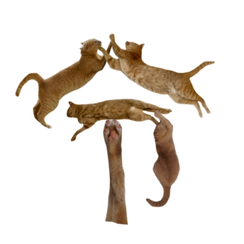

「令和」清々しく和やかな時代でありますように。
（書き初めは2019年になってから二度目なんですよー。）
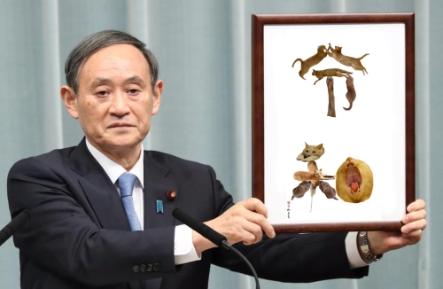
やっぱりこの方とのコラボは外せない！
 ↑ガブッと一押し↑
↑ガブッと一押し↑
5月1日朝、住吉大社に行ってきました。
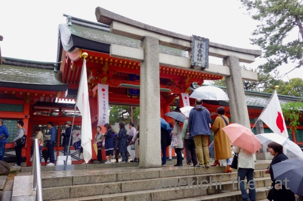
御朱印受付開始の８時半前に行きましたがすでに大行列。
4月30日よりもたくさんの方がいらしてました(-_-メ)
二人で並んでもしょうがないのでおっとにお願いして私は家に帰ってきましたよwww
(並び始めてから30分くらいで授与していただけましたよ＾＾、とのこと）
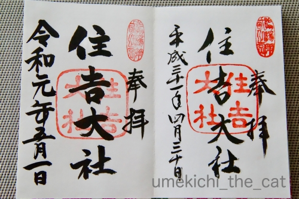
平成から令和へ＾＾
連休前半はお花見にも行きました。
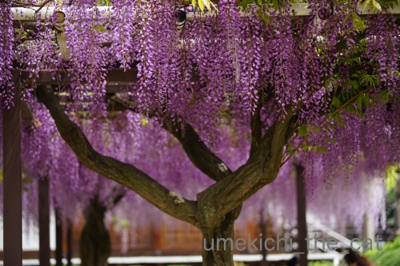
去年に引き続いて葛井寺参り。
ちょっと早いかなと思いましたが
門前の和菓子屋さんのおばちゃんは「こんなもんやろ」とのことでした(⌒-⌒;
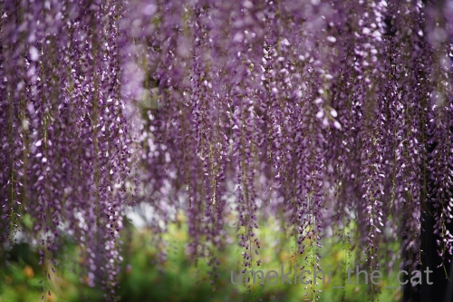
流れるようなお花が見事です。
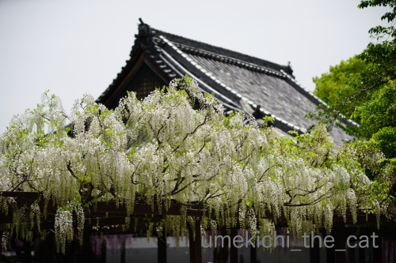
シロバナも。
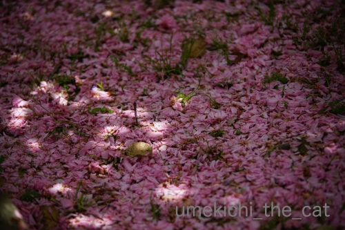
散った八重桜が地面を彩っていました。
この後移動して堺市の浅香山浄水場へ。
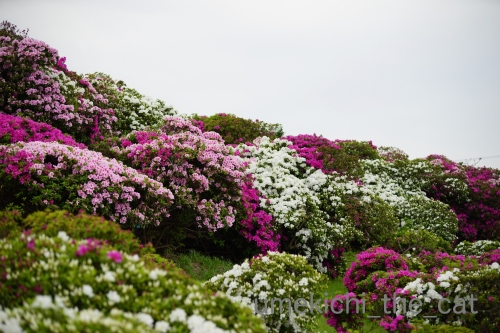
つつじは低木の庭木だとおもったら大間違い。
剪定しないとこんなに大きくなるんですね！
つつじがこんなに大きくなるなんてここに来るまで知りませんでしたw
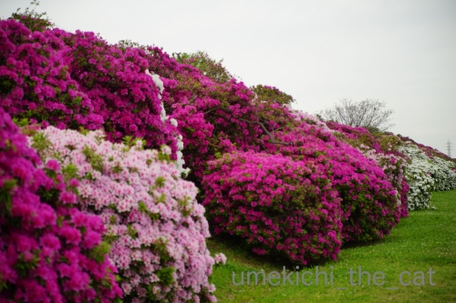
他とはスケールの違うつつじは本当に見応えがあります。
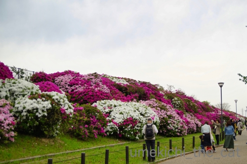
人物をが入った写真だとつつじの大きさが分かるでしょうか。
実際に見ると圧倒されますよー。
そうそう！記事にし忘れていたあいぽんの待ち受け画面。
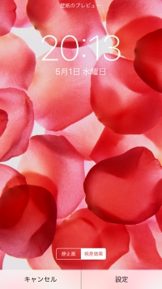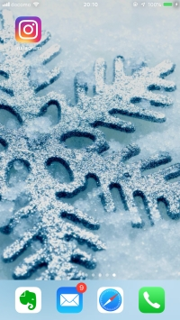
左：ロック画面 右：ロック解除時
思えばスマホデビューをした10年くらい前から機種変してもずーっとこの画像。
一度変えたことはありましたが違和感があって元に戻しました。
画像は壁紙画像提供アプリからDLしたものです＾＾
新しい時代を迎えた喜びを梅吉さんが全身で表現してくれました。
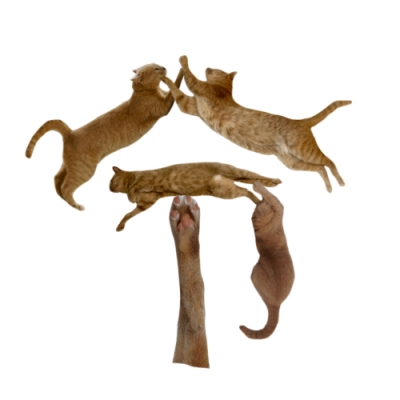
「令和」清々しく和やかな時代でありますように。
（書き初めは2019年になってから二度目なんですよー。）
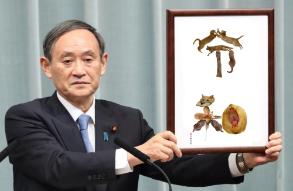
やっぱりこの方とのコラボは外せない！
5月1日朝、住吉大社に行ってきました。
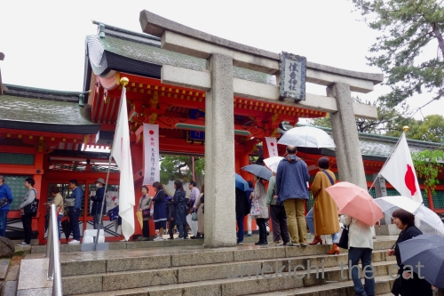
御朱印受付開始の８時半前に行きましたがすでに大行列。
4月30日よりもたくさんの方がいらしてました(-_-メ)
二人で並んでもしょうがないのでおっとにお願いして私は家に帰ってきましたよwww
(並び始めてから30分くらいで授与していただけましたよ＾＾、とのこと）
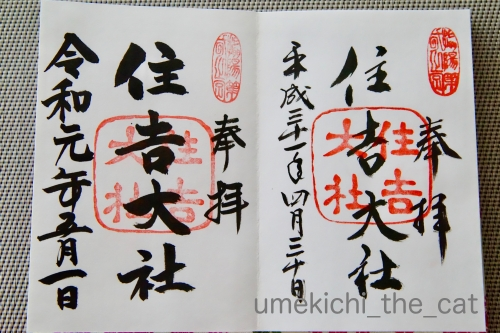
平成から令和へ＾＾
連休前半はお花見にも行きました。
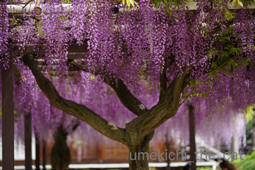
去年に引き続いて葛井寺参り。
ちょっと早いかなと思いましたが
門前の和菓子屋さんのおばちゃんは「こんなもんやろ」とのことでした(⌒-⌒;
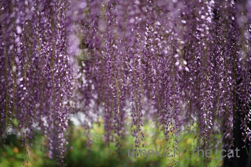
流れるようなお花が見事です。
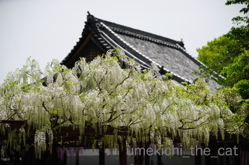
シロバナも。
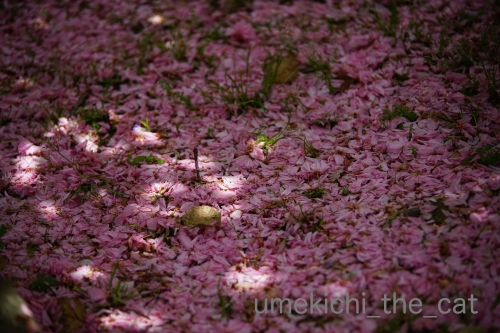
散った八重桜が地面を彩っていました。
この後移動して堺市の浅香山浄水場へ。
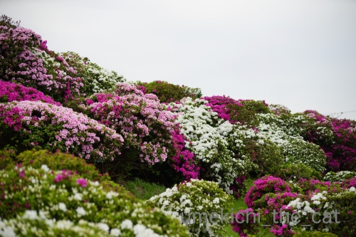
つつじは低木の庭木だとおもったら大間違い。
剪定しないとこんなに大きくなるんですね！
つつじがこんなに大きくなるなんてここに来るまで知りませんでしたw
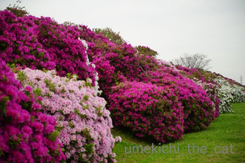
他とはスケールの違うつつじは本当に見応えがあります。
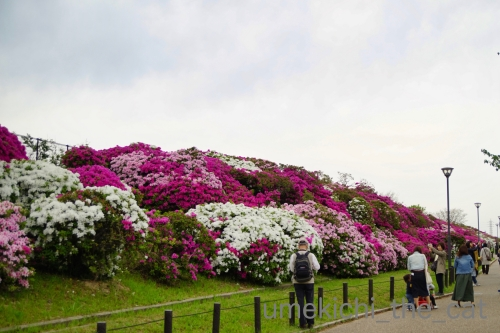
人物をが入った写真だとつつじの大きさが分かるでしょうか。
実際に見ると圧倒されますよー。
そうそう！記事にし忘れていたあいぽんの待ち受け画面。
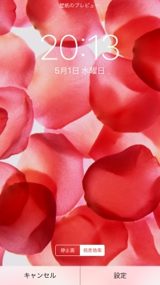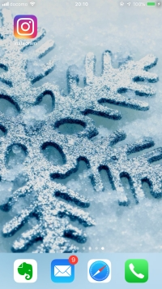
左：ロック画面 右：ロック解除時
思えばスマホデビューをした10年くらい前から機種変してもずーっとこの画像。
一度変えたことはありましたが違和感があって元に戻しました。
画像は壁紙画像提供アプリからDLしたものです＾＾

カフェオレ色の梅吉

梅吉 2023年8月10日 永眠


梅吉と出会った譲渡会

犬猫の理由なき殺処分ゼロ
妄想広告
UMEKICHI 光

爆発的に早い！
時々攻撃的！
Thanks to Mr.Boss365
爆発的に早い！
時々攻撃的！
Thanks to Mr.Boss365

梅吉さんのデザイン文字、最高です！！！
いい時代が到来しそうな予感♡
by nachic (2019-05-02 00:43)
梅吉さん文字ひとつひとつのポーズが素晴らしいです。肉球もあるし大きなお口も開けて、ハイタッチしてたりスライディングしてたり。よく考えてありますねー。
by zombiekong (2019-05-02 00:59)
お見事！
にゃん字のことですよ～。
by yumibaba (2019-05-02 05:13)
コレを作るの、大変だったでしょうね＾＾
by ぽちの輔 (2019-05-02 06:33)
梅吉さんの書初め♪
我が家にも飾っておきたいですねぇ～(#^.^#)
by きぃ (2019-05-02 07:35)
さすが梅吉さん、使えるポージングがたくさんあるんですねぇ=(^.^)=
うちのニャンズだと（数秒考えて見る）・・・無理だなw
御朱印、昨日の明治神宮は１０時間待ちだったとか(°_°)
皆様、すごいなぁ( ^ω^ )
by ニッキー (2019-05-02 08:15)
梅吉くんの令和！ナイスですーー！
それぞれのポーズもおもしろくてかわいくていいですね。
藤にツツジ、美しいですね。今がシーズンで見に出かけたいのですが、天気が悪いこともあって、すっかり出不精しています。
白い藤がステキ。大きなツツジは豪華！いいなぁ。
御朱印、あちこちで大行列ですねぇ。しかしその御朱印をフリマで売ってる人もいる、というので呆れてます。売る方も売る方だけど買う方も買う方だわ。
待ち受け、赤と白。一度慣れると変えると違和感ってのもわかります。
by ChatBleu (2019-05-02 09:04)
令和の和勢いを感じます^^
by ニコニコファイト (2019-05-02 09:15)
ニャンニャン令和 ♪
管さん お似合いです(^^)
by チャー (2019-05-02 09:32)
元号またぎの御朱印ですね！
梅吉さんの令和も良い感じです(^^)
by ma2ma2 (2019-05-02 09:43)
こんにちは。
梅吉くんの「令和」ナイスです。
「和」の口の部分が、まさに「口」で決まりました！！
菅ちゃん？多少、引き攣った感じにも見えます（笑）
ちぃさんご贔屓？の住吉大社の御朱印ゲット！！
良い記念になります。ご利益もありそうです。
ツツジ、見事でスケール感がイメージと違いますね。
スマホ画面、梅吉君でないのですね？下僕愛は・・・！？(=^･ｪ･^=)
by Boss365 (2019-05-02 10:22)
お花の数々きれ～！
そして和の口の部分に脱帽です！
さすが、コラボもおもしろ～い♪
by ふにゃいの (2019-05-02 15:53)
梅吉さんの令和とても芸術的です。日展に応募できそうです。
葛井寺の藤の花が見事ですね～ こんなに幻想的な藤のカーテン♪美しい。
浄水場のつつじもてんこもり♪ こんなにデカい物体なのですね。
住吉大社の御朱印テレビでも取り上げていましたよ。
ほうぼうで令和の御朱印を求める方の行列がすごいようです。
太宰府天満宮、伊勢神宮、明治神宮は10時間待ちって！・・・
みなさま体力ありますね～。
おばさんは、朝ごはんも食べずに午前中に舞洲を往復しただけで一日のミッション完了です(笑
by marimo (2019-05-02 16:46)
梅吉さんの猫文字、最高です（笑）
肉球、いい仕事してます（笑）
そして『和』健康な喉まで見えて
素晴らしいお口です（笑）
ちぃさん家にとって、令和が良い年でありますように。
by kiki (2019-05-02 17:39)
明けましておめでとうございます、
って、一年の途中でこんな気分になるのは初めてです。
先生は、連休楽しんでいますか？^ ^
by 小松達也 (2019-05-02 19:06)
梅にゃん文字、最高(*^▽^*)
牙つきの「和」が大好きです♪
官房長官もこれで発表したら高感度ぐ～んとアップだったかもしれませんね！！
御朱印もにゃん文字だったら・・・さらに行列が伸びて大変です。
葛井寺の藤、私も少し早かったかなと思っていましたが、地元の人が「こんなもんやろ」とおっしゃるならそうなのでしょう^^;
by ゆきち (2019-05-02 21:12)
明けましておめでとうございますagain 。
本元号もヨロシクお願いします。(^^)
梅吉さん令和、すご〜い！！
菅さんがマジメに掲げている姿が美しい！（＾◇＾）
五月の花が咲き乱れてますね。
待ち受け画面は買ってからそのままの設定です。d(￣ ￣)
by yes_hama (2019-05-02 22:00)
猫文字見事だニャ～
そういえば、相撲協会も関取集めて人文字を作ってたよ（ﾟ□ﾟ）
by 英ちゃん (2019-05-02 22:56)
令和は猫年なんですね^^;
梅吉さんの頑張りで良い年になる予感がします。
ありがとう梅吉さん＾＾
by riverwalk (2019-05-03 18:23)
おぉ、これは素晴らしいお書き初め(^^)v
希望を全身で表現した、のびやかな「令」
そして、さまざまなドラマを包括して絆を表現した「和」
梅吉さんの、深い深い哲学を拝見いたしました♡
by のらん (2019-05-04 08:08)
令和の書き初め、完璧ですね！
梅吉くん師範だ〜〜〜(笑)
和のおくちが最高！
令和になってから、まだ神社参拝してないです。
やっぱり参拝するならいつもの五條天神かな〜と思いつつ、上野に行ってないのだ。GW終わらないと、人が多すぎて・・・ねｗ
待ち受け画像ありがとう！
大人な感じで素敵〜〜〜！^^
by リュカ (2019-05-04 12:16)
令和の梅吉さん、これは素晴らしいにゃん！
平和な世の中になることを祈ります。
もうツツジなんですね。こちらがやっと桜の見頃が終わり、もう数週間でツツジの季節です(^^)
by kou (2019-05-04 18:40)
おぉ、菅さんが掲げるのは猫文字！
よくできてますねー！
令のひとがしらも反転じゃなくて別の梅さま使ってるところが
いい仕事されてますな^^
御朱印帳、すごい！明治神宮は10時間待ちと言ってたけれど・・・
いったい何時まで開けていたのだろう^^;
藤もおみごとですね！
by Ja-Kou66 (2019-05-04 23:39)
猫文字、お見事です！！
そして「和」の「口」は口の写真なんですね～。
菅さんもこんな風にパロられると思ってなかったかと。
住吉っさんの御朱印もちゃんと平成から令和と
両方あるし、これは流石！って感じです！！
by よーちゃん (2019-05-06 12:40)
みなさま、沢山のコメントありがとうございますm(_ _)m
お返事は明日から書かせてくださいね＾＾
by ちぃ (2019-05-06 17:14)
こんにちは
和の口が最高です！
by 藤並 香衣 (2019-05-06 21:25)
ナイス梅文字d(*￣∇￣)
私も『和』の口がサイコーにお気に入りです♪
菅さんにもご出演いただいて素晴らしい文字ですｗｗ
住吉さんで御朱印を頂いてこられたのですね！
明治神宮でしたっけ？10時間待ちとかいうところは＾＾
そんな根性ありません(笑)
御朱印集めはしていないのですが、ちょっと興味あります。
藤棚見事ですね～♪去年は津島の有名な藤棚を見に行った
のですが、すでに散っていて咲いているのが1本だけでした(笑)
by カトリーヌ (2019-05-07 17:43)
nachicさん＞
猫文字（梅文字）で「令和に幸多かれ」と願ってみました＾＾
zombiekongさん＞
あまり手をかけられなかったのですが・・・
お正月に使ったパーツがあるのは（きっとお気づきかと！）
スルーしてくだいさませ(⌒-⌒;
「口」の部分は絶対あくび顔を使おうと心に決めておりました＾＾
yumibabaさん＞
ありがとうございます＾＾
梅吉に体を張ってもらいました！
菅さんと一緒なのがちょっと嬉しいです(*>艸<)
ぽちの輔さん＞
お正月の書き初めで使ったパーツがちらほらと・・・(⌒-⌒;
日々真面目にパーツ集めをしておこうと思いましたw
きぃさん＞
梅文字の書き初め、何か良いことを招いてくれるでしょうか＾＾
ニッキーさん＞
今回はお正月に使ったパーツもちらほらなんですが
使えるポーズの写真だけは有難いことにたくさんあります＾＾
あとか私がマメに作業をしておかないとね、ですw
明治神宮、10時間！？
整理券か何かを出して後で取りに来てくださいですよね。。。
まさかずっと待っていた人がいるのかしら・・・
書き手の人も大変だったでしょうね。
ChatBleuさん＞
梅文字、がんばりました＾＾
写真だけはたくさん撮っているので
にゃん字のパーツには不足しないのです。
が、いつか使えるかも！とボツ写真まで撮っておくので
ライブラリの容量が大変なことになってますw
御朱印、売ったり買ったりもけしからんですが
5月1日以降に、「5月1日って書いてください」と言う
困った人もいるようですよ(-_-メ)
某有名寺院の方がツイートしてました。。。
ニコニコファイトさん＞
梅吉のお口の勢いですね！
チャーさん＞
戸惑い気味の菅さんとにゃん字の梅吉♪
なかなかの取り合わせだと思いまーす＾＾
ma2ma2さん＞
御朱印、せっかくいただくのだから年号またぎで揃えよう！と思いました＾＾
次の改元時、御朱印もらいに行ける元気があるかどうかわからないしwww
Boss365さん＞
「和」の「口」は梅吉のあくび顔しかない！と思っていました＾＾
上手くはまって大変自己満足ですwww
菅さんもそのあたりを感じていただけているのでしょうか。
住吉大社は氏子になろうとは思いませんが（笑）
贔屓にしております(≧▽≦)
行きている間に少しでも住吉大社の秘密に迫りたいです！
スマホ画面、私の周りには愛猫を待ち受けにしている人は
あまりいないです。
おそらく「うちの子の可愛さはこのサイズには納まらない！」
と思っているのと
アイコンで可愛いお顔が見えなくなるのがもどかしいのかと思われます0(≧▽≦)0
だれかに梅吉を自慢したときはインスタを見てもらうしー！！
ふにゃいのさん＞
お花の季節あちこち出かけてきました！
「和」の「口」は絶対にあくび顔と決めていました＾＾
上手くはまって満足です！！
marimoさん＞
日展、チャレンジしてみようかしら・・・(*>艸<)
にゃん字は書の部門かしらwww
梅雨になって灼熱地獄が始まるまでの短いお花の期間
あちこち行って堪能しています＾＾
令和の御朱印騒ぎ、10時間並んだ方いるのかしら。
きっと整理券か何かが出たと思うのですが・・・
売り買いするなんだかな、の人の話も聞きますが
5月1日以降に「日付は5月1日って書いてください」と
言い張る困った人もいるそうですよ(-_-メ)
kikiさん＞
にゃん字、頑張ってもらいました＾＾
梅吉はきっとこのために
日々いろんなポーズをキメてくれているのでしょう！
「和」の「口」は絶対このあくび顔と思っていました。
上手くはまって満足でーす。
令和、kikiさんご一家にとっても良い年になりますように。
小松達也さん＞
喜ばしい御代変わり初めての事ですものね＾＾
貴重な体験が出来たと思ってます。
梅吉先生もそう思って
襟を正して連休をお過ごしになっていたようですよ！
by ちぃ (2019-05-07 20:46)
ゆきちさん＞
清々しい「令和」の文字に梅吉の牙で勢いを添えてみました＾＾
にゃん字で発表していたら菅さんは今頃「令和の猫のおじさん」と
より一層女子高生に人気になっていたかもしれませんねw
住吉大社の御朱印授与所、お正月でもあんなに並んでいるのを
見たことがありませんでした。
あんなに並ぶと思っていなかった未だ道産子感覚の我が家ですwww
yes_hamaさん＞
新元号の年がスタートしましたね＾＾
旧元号は大変お世話になりました。本元号もよろしくお願いしますm(_ _)m
真面目な顔の菅さんがにゃん字（梅文字）を掲げる・・・
コレがやってみたかったのです！
年の初めに大満足〜0(≧▽≦)0
待ち受け買ったまま状態・・・その気持ちわかります！
私もとりあえずカスタマイズしましたがその後は変更なし、です。
見慣れない画面になっているとなんか落ち着かなくって(⌒-⌒;
英ちゃんさん＞
どすこい文字、テレビで見ました＾＾
なんだか可愛かったですよ！
riverwalkさん＞
そうですね！亥年は4月30日で終了！
令和は猫年にしましょう。そうしましょう＾＾
にゃん文字の「令和」梅吉が皆さんに幸多かれと
体を張ってくれました(≧▽≦)
のらんさん＞
そこまで深くにゃん文字を理解していただけたとは！
がんばった梅吉もよろこんでおりますm(_ _)m
でも梅文字には
ぼへ公園ウメじいちゃんのようなセクシーさが足りませぬwww
by ちぃ (2019-05-07 21:07)
リュカさん＞
師範代梅吉、カッコイイー0(≧▽≦)0
「和」の「口」は絶対梅吉のあくび顔って決めてました＾＾
上手くはまって大満足ですよー！
これからも立派な字が書けるように精進しますねwww
各神社、そろそろ令和の大にぎわいも終わったかな？
住吉大社はGW中は奉祝行事で連日大にぎわいだったけど
連休明けは落ち着いていましたよ。
スマホの待受はずーっとこのままのような気がします(*>艸<)
結構めんどくさがりー！
kouさん＞
梅吉も平和な御代になることを祈って頑張りました＾＾
桜の後はツツジ、そちらの方もこれからお花のシーズンですね！
釣りシーズンにもなるのかな(≧▽≦)
Ja-Kou66さん＞
梅吉の写真を見ながらパーツ集めを頑張りました＾＾
菅さんも戸惑いがちにお喜びの感じでしょうかwww
明治神宮、10時間とはすごいですよねー。
10時間並んだ人お食事トイレどうしたんだろう・・・
よーちゃん＞
「和」の「口」は梅吉のあくび顔って決めてました！
上手くはまってやったーって感じですよー＾＾
次の御代変わりには御朱印をもらう元気があるかわからないので
平成→令和に頑張りました！！
藤並 香衣さん＞
ありがとうございます！
梅吉のナイスあくびでしょうか0(≧▽≦)0
カトリーヌさん＞
大口開けた梅吉のあくび顔の写真はたくさんあるので
どれにしようか迷っちゃいましたよwww
おくちの中の洗濯板が見えていて舌の先がハートになっている
この写真を選びましたー＾＾
住吉さんは（私は並んでませんがwww）30分くらいと。
10時間待つっていったい何人並んでどこに並んだのーって感じですよねwww
津島の藤棚どこだろうとググってみました。
よくバスツアーで見かける天王川公園なんですね！
関西近辺の地理や地名にまだピンとこないので
旅行会社のパンフは？？？になっちゃいます(〃▽〃)
by ちぃ (2019-05-08 16:32)